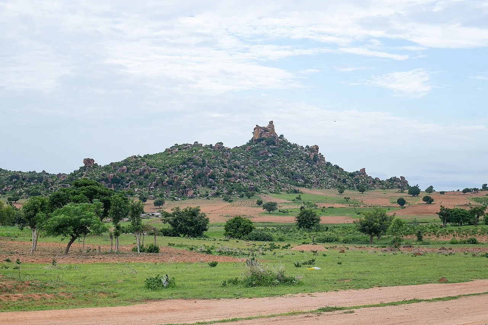

Data
- Capital:
- Abuja
- Population:
- About 230 million
- Area:
- 923,768 km²
- Languages:
- English and 500+ others
- Currency:
- Nigerian naira (₦)
- Calling code:
- +234

Weather
- Location:
- Mambilla Plateau
- Conditions:
- Cool and partly cloudy
- Temperature:
- 8 °C
- Wind speed:
- 10 km/h
- Wind chill:
- N/A